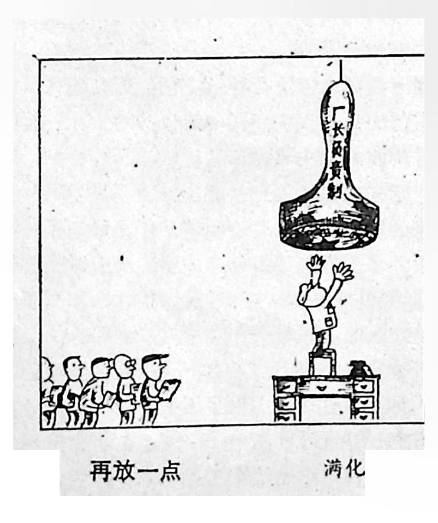

满化 《人事》1987年第11期（总第26期），第30页
再放一点
Lower It a Little More
- Text in the drawing
- 厂长负责制
Factory-director responsibility system - Description
- A lamp labeled “factory-director responsibility system” hangs from the ceiling; a man on a stool on top of a desk stretches up and still cannot reach it, while a queue of workers waits behind him with their papers.
- Note
- The factory-director responsibility system (厂长负责制), introduced from 1984, was meant to give directors rather than Party secretaries authority over enterprises; the cartoon suggests it had been hung too high to use.
- Artist
- Man Hua 满化
- Published in
- 《人事》1987年第11期（总第26期）, p. 30
- Themes
- Reform and its implementation · Bureaucratism

Cite
Man Hua, “再放一点” [Lower It a Little More], Renshi (Personnel) 《人事》, 1987, no. 11, p. 30.